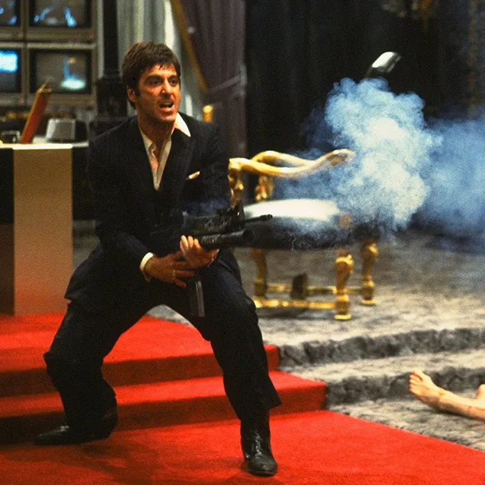

Curriculum Vitae

El gran Tony Montana
Resumen
Antonio Montana, un matón de barrio que persigue a toda costa el sueño americanos
Se encuentra entre los 125.000 cubanos que afrontaron la salida del país, favorecida por Fidel Castro;
hacia los EEUU a mediados de los 80. comenzando su carrera en las drogas y los asesinatos.
Datos personales
- Nombre: Antonio Montana
- Apodo: Scarface
- Nacionalidad: Cubana
- Edad:42
Formacion
Lord (Montana Mafia ) Dishwasher at El Paraiso
Soldier for Lopez Cartel
CEO of Montana Realty, Montana Management, Montana Travel
Business associate of Gina Montana's Beauty Salon
Cuban Army Veteran
Frases celebres
- "I always tell the truth. Even when I lie."
- "You know what? Fuck you! How about that?"
- "I'm Tony Montana! You fuck with me, you fuckin' with the best!"
- "Say hello to my little friend!"
- "In this country, you gotta make the money first. Then when you get the money, you get the power. Then when
you get the power, then you get the women."
- "The only thing in this world that gives orders... is balls."
Fuente:
Bibliografia
Fuente:
hola